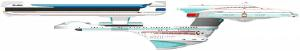

Flotta Stellare - Classe Excelsior |
Dati
di una nave tipica di questa classe:
Cantieri di produzione: ADSB Integration Facility,
Utopia Planitia,
Marte.
Categoria: Nave esplorativa.
Capacità: 750 membri di equipaggio, 130 visitatori, 9.800 persone come
limite massimo in caso di evacuazione di emergenza.
Motori: Nucleo a curvatura con due gondole, un sistema ad impulso.
| USS Al-Batani NCC-42995 Janeway ha servito come ufficiale scientifico su questa nave. | Caretaker | Al-Batani era un astronomo arabo che visse attorno all'anno mille, autore delle Tavole Astronomiche. |
| USS Berlin NCC-14232 Nel 2364 ha risposto ad una chiamata di soccorso di un avamposto federale nei pressi della Zona Neutrale Romulana. | Angel One | Il nome Berlin è assai adeguato in quanto la Zona Neutrale è quanto di più simile ci sia al muro di Berlino. |
| USS Cairo NCC-42136 Comandata dal Capitano Edward Jellico, nel 2369 ha trasportato il Vice Ammiraglio Nechayev sull'Enterprise. Comandata in seguito dal Capitano Leslie Wong, è stata data per distrutta nel 2374 da forze del Dominio durante il pattugliamento della Zone Neutrale Romulana. | Chain of Command, In the Pale Moonlight | Il Cairo è la capitale dell'Egitto. Cairo è una cittadina statunitense del midwest che ha dato il nome ad una cannoniera fluviale che ha combattuto le prime fasi della guerra civile americana, prima della battaglia di Vicksburg. |
| USS Charleston NCC-42285 Ha trasportato i superstiti di un satellite criogenico terrestre sulla Terra. | The Neutral Zone | Charleston è il nome di due città americane, nella Virgina Occidentale e nel Sud Carolina. |
| USS Crazy Horse NCC-50446 Membro della Task Force 3 che avrebbe dovuto bloccare i Borg. Ha inoltre portato l'Ammiraglio Pressman al rendez-vous con l'Enterprise. | Descent, The Pegasus | Crazy Horse (Cavallo Pazzo) è il nome del capo degli indiani Oglala Sioux, che è stato uno dei più valorosi capi indiani nella battaglia di Little Bighorn nel 1876. |
| USS Crockett NCC-38955 L'ammiraglio Mitsuya ne devia la rotta nel 2370 per poter giocare a poker con Sisko su Deep Space Nine. | Paradise | Davey Crockett è un pioniere americano. |
| USS Enterprise NCC-1701-B Comandata dal capitano John Harriman, varata nel 2293. | Generations | Tutte queste navi si chiamavano Enterprise... |
| USS Excelsior NX-2000 Comandata dal Capitano Styles, prima astronave dotata di propulsore transwarp, soprannominata «The Great Experiment». | Star Trek III | Il modellino è stato disegnato da Bill George ed è stato costruito dalla ILM. |
| USS Excelsior NCC-2000 Comandata dal capitano Hikaru Sulu. | Star Trek VI, Flashback | |
| USS Farragut Sarina, Patrick e Lauren hanno viaggiato a bordo di questa nave sotto falso nome. | Chrysalis | David Glasgow Farragut (1801-1870) è stato un eroe navale americano che ha combattuto durante la guerra civile famoso per il suo motto «Damn the torpedoes, full speed ahead!» pronunciato dalla coffa della sua fregata non corazzata, la Hartford, appena dopo l'esplosione della Tecumseh su di una mina durante la battaglia di Mobile Bay. Farragut fu il primo ufficiale nominato ammiraglio dalla marina degli Stati Uniti. |
| USS Fearless NCC-4598 Prima nave su cui Kosinski e il Viaggiatore provano una presunta miglioria ai motori warp. | Where No One Has Gone Before | |
| USS Fredrickson NCC-42111 Una delle navi danneggiate durante la battaglia contro il Dominio all'inizio del 2374. | A Time to Stand | Anthony Fredrickson è uno degli artisti di Deep Space Nine. |
| USS Gorkon NCC-40512 Comandata dall'ammiraglio Alynna Nechayev, componente della task force per l'attesa invasione Borg. | Descent - Part I | Il Cancelliere Gorkon è stato assassinato nel 2293 da alcuni estremisti terrestri mentre guidava la delegazione Klingon. Il suo assassinio non ha interrotto il processo di pace che è stato portato avanti dalla figlia Azetbur. |
| USS Grissom NCC-42857 Nave allertata per fornire aiuto per il disastro causato dalla contaminazione di tricianato nel sottosuolo di Beta Agni II. | The Most Toys | Virgil Ivan «Gus» Grissom è un astronauta americano del Mercury morto nel rogo del test dell'Apollo 1 il 27 gennaio 1967, insieme a Edward White e Roger Chaffee. |
| USS Hood NCC-42296 Comandata dal Capitano Robert DeSoto, assegnamento precedente all'Enterprise di William Riker. Ha trasferito William Riker, Beverly Crusher e Geordi La Forge sull'Enterprise. L'Enterprise ha assistito la Hood nel progetto di terraforming di Browder IV nel 2366. Nel 2379 ha preso parte allo Starfleet Battle Group Omega in soccorso dell'Enterprise. | Encounter at Farpoint, The Defector, Allegiance, Tin Man, Nemesis | La HMS Hood della Royal Navy deve il suo nome alla famiglia Hood,
che ha dato alla marina britannica quattro famosi ammiragli: Lord Hood, Lord
Bridport, Sam Hood e Horace Hood, che ha combattuto la Battaglia dello
Jutland durante la Prima Guerra Mondiale. La HMS Hood, un
incrociatore corazzato, varata nel 1918, era la nave da guerra più lunga del
mondo (262 metri) armata con otto cannoni da 381 mm e capace di raggiungere
32 nodi. Dopo la fine della Prima Guerra Mondiale è stata impegnata in una
crociera intorno al mondo per fare sfoggio della potenza della Royal Navy in
tutte le colonie e i paesi alleati dell'Impero. Nel Maggio del 1941 la
Hood e la Prince of Wales ingaggiarono la Bismark e la
Hood ne fu la sua prima vittima. John B. Hood era un generale Confederato che ha combattuto la Guerra Civile Americana. Il modellino della Hood è quello dell'Excelsior costruito per Star Trek III. Le scene della Hood che vola a fianco dell'Enterprise sono state utilizzate varie volte per rappresentare altre astronavi di classe Excelsior vicino all'Enterprise. |
| USS Intrepid NCC-38907 Comandata dal capitano Drew, è stata la prima nave a rispondere alla richiesta di aiuto dopo il massacro di Khitomer del 2346; nave di Sergey Rozhenko. | Sins of the Father, Family, Reunion | |
| USS Lakota NCC-42768 Ha trasportato sulla Terra Sisko e Odo, dopodiché il comando della nave è stato assunto dal capitano Erika Benteen. | Homefront | Lakota è la nazione degli indiani americani e una maestosa altura dei pressi di Hermosa, South Dakota. |
| USS Lexington NCC-14427 Ha trasferito sull'Enterprise dei rifornimenti medici per la colonia Taranko. | Thine Own Self | Concord e Lexington sono i villaggi che nel 1775 furono il teatro delle
prime scaramucce che sfociarono in seguito nella Rivoluzione Americana. La Lexington era una cannoniera fluviale unionista che si è distinta nelle battaglie di Forte Henry e Pittsburg landing. La portaerei della marina americana Lexington ha combattuto molte battaglie nel Pacifico durante la Seconda Guerra Mondiale. |
| USS Livingston NCC-34099 Nave su cui hanno servito Benjamin Sisko e Curzon Dax. | Invasive Procedures | David Livingston è produttore e
regista. Robert R. Livingston ha firmato la Dichiarazione d'Indipendenza degli Stati Uniti d'America. |
| USS Malinche In data stellare 50485.2 è stata attaccata da un gruppo di Maquis durante il pattugliamento della zona demilitarizzata nei pressi dell'avamposto Gamma 7. | For the Uniform | Malinche è il nome della principessa messicana del XVI secolo offerta in dono come schiava come offerta di pace ai conquistadores spagnoli. |
| USS Melbourne NCC-62043 In data stellare 41365.9 è in riparazione presso la base stellare 74. Distrutta dai Borg a Wolf 359. | 11001001, The Best of Both Worlds, Infinite Regress | Melbourne è una città dell'Australia. |
| USS Okinawa Comandata dall'ammiraglio Leyton. Sisko ha combattuto nella guerra Tzenkethi sulla Okinawa sotto il comando di Leyton. | Homefront, Paradise Lost | Le isole di Okinawa del mare cinese sono state teatro di duri scontri alla fine della Seconda Guerra Mondiale. |
| USS Potemkin NCC-18253 Riker ha servito su questa nave prima di essere trasferito sulla Hood. Ha trasportato la dottoressa Toby Russel a bordo dell'Enterprise. | Peak Performance, Legacy, Ethics, Second Chances | Grigory Aleksandrovich Potemkin (1739-1791) era un militare e un uomo politico russo nel periodo del regno di Caterina II che prese parte al colpo di stato che portò al trono la medesima. |
| USS Repulse NCC-2544 Comandata dal Capitano Taggert. La dottoressa Pulaski ha servito su questa nave prima di essere trasferita all'Enterprise. | The Child Unnatural Selection | Repulse era un incrociatore britannico della Seconda Guerra Mondiale. |
| USS Roosevelt NCC-2573 È una delle navi distrutte a Wolf 359 dai Borg. | Unity | Theodore Roosevelt è stato un presidente degli Stati Uniti d'America. |
| USS Tecumseh NCC-14934 Ha partecipato al contrattacco contro l'armata Klingon nel 2373. | Nor the Battle to the Strong | Tecumseh (1768-1813) era un capotribù indiano, che guidò una
confederazione indiana contro l'espansione dei bianchi verso ovest, ma fu
sconfitto a Tippecanoe nel 1811. La Tecumseh era una corazzata di classe Monitor affondata per la collisione con una mina a Mobile Bay. |
| USS Valley Forge NCC-43305 Ha partecipato nel 2374 alla battaglia tra la Federazione e il Dominio per il controllo del sistema Chin'toka. | Tears of the Prophets | Valley Forge è il luogo della Pennsylvania in cui le truppe del Generale George Washington hanno trascorso un inverno durissimo durante la Rivoluzione Americana. |
| [Senza Nome] NCC-14427. | Thine Own Self | |
| [Senza Nome] NCC-45505 faceva parte della flotta che ha sferrato l'attacco nel settore Chin'Toka ed in seguito è stata gravemente danneggiata o distrutta. | Tears of the Prophets | |
| [Senza Nome] | The Offspring | |
| [Senza Nome] | The Drumhead |
USS EXCELSIORSTARFLEET REGISTRY NCC 2000
|